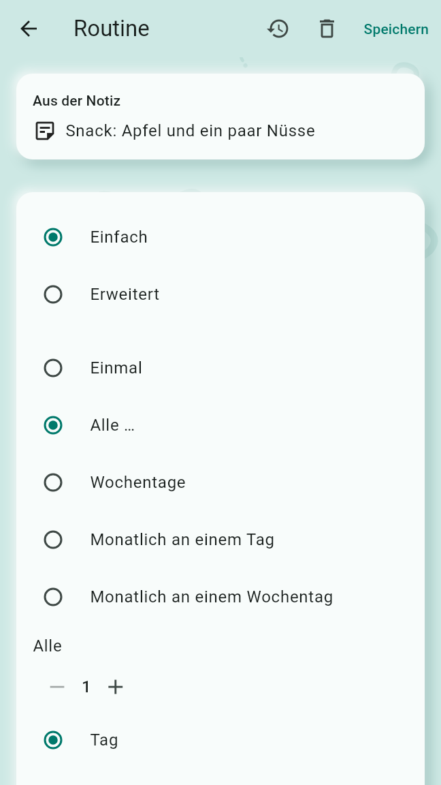
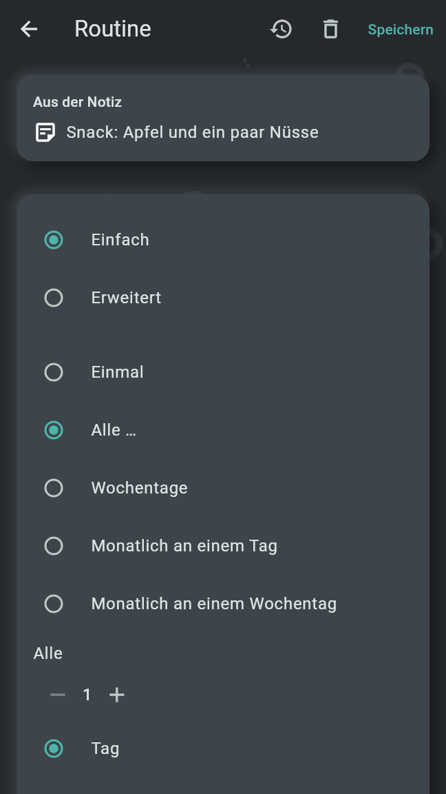

Eine Routine ist etwas, das nach einem wiederkehrenden Plan zu tun ist; eine Erinnerung ist eine Routine, die nur einmal vorkommt. Beide entstehen aus einer Notiz, klingeln zu ihrer Zeit und klingeln wieder, bis sie erledigt sind. Die Agenda zeigt, was heute und an den sechs Tagen danach fällig ist.
Eine neue Routine beginnt jeden Tag um 08:00, eine neue Erinnerung einmal zur nächsten vollen Stunde. Speichern in der oberen Leiste legt sie an; wer den Editor ohne Speichern verlässt, verwirft die Änderung. Nach dem Speichern stehen in der Leiste auch der Kalender-Knopf, wo das Handy eine Kalender-App hat, Verlauf bei einer Routine und Löschen, das einmal nachfragt; eine gelöschte Routine bleibt 30 Tage im Papierkorb, ihre Notiz bleibt. In einem geteilten Bereich ändert nur ein Verwalter Routinen und Erinnerungen; alle anderen sehen den Editor mit „Das kann nur ein Verwalter dieses Bereichs ändern.“


Der Plan wird in einer von zwei Arten eingestellt, Einfach und Erweitert. Die einfache Art bietet:
Ab (Am bei Einmal) wählt den ersten Tag. Alles außer Einmal hat Endet: Nie, An einem Tag mit seinem letzten Tag oder Nach einer bestimmten Anzahl, wobei jede Uhrzeit einzeln zählt.
Die erweiterte Art nimmt die Wiederholregel als RRULE, das Format der Kalender, etwa
FREQ=MONTHLY;BYDAY=1MO für den ersten Montag jedes Monats; leer gelassen kommt sie
einmal vor. Ein Plan, den die einfache Art nicht zeigen kann, öffnet in der erweiterten.
Unter Uhrzeiten fügt Uhrzeit hinzufügen eine Uhrzeit hinzu; jede hat einen Knopf, der sie entfernt. Ohne Uhrzeit ist sie ganztägig. Eine Erinnerung hat höchstens eine Uhrzeit. Unter Als Nächstes stehen beim Bearbeiten die nächsten drei Fälligkeiten, oder „Das kommt nie vor.“ Früh oder spät abhaken verschiebt den Plan nie.
Der eingeklappte Abschnitt Erneut erinnern sagt, wie oft ein unbeachteter Alarm wieder klingelt, etwa „Klingelt alle 10 Min. wieder, bis es erledigt ist“. Er klingelt in diesem Abstand wieder, bis er erledigt oder verschoben ist oder die nächste Fälligkeit ansteht; dann gilt er als verpasst. Eine Erinnerung hört um Mitternacht auf. Zur Wahl stehen Standard und 5, 10, 15, 30 oder 60 Minuten. Der Standard steht in den Einstellungen unter „Alarme“, „Standard auf diesem Handy“, 10 Min., solange er nicht geändert ist.
Der eingeklappte Abschnitt Eskalation ist zuerst aus („Aus: klingelt nur wieder“). Mit dem Schalter „Zum Vollbild-Alarm eskalieren“ wird eine Fälligkeit, die eine Anzahl von Malen unbeachtet wieder geklingelt hat (3 beim ersten Einschalten; 1, 2, 3, 5 oder 10), zu einem Vollbild-Alarm mit Ton, auch über dem Sperrbildschirm. Er zeigt die erste Zeile der Notiz und die Uhrzeit, ein großes Erledigt und „Erinnere mich wieder in …“ mit 10 Min., 30 Min. und 1 Std.; Zurück schließt ihn nicht. Er klingelt bis zu 5 Minuten lang und klingelt danach erneut, bis er erledigt oder verschoben ist.
Eine Fälligkeit erscheint als Benachrichtigung mit Erledigt und Später; Später macht aus derselben Benachrichtigung 10 Min., 30 Min. und 1 Std. Beides geht, ohne die App zu öffnen, auch auf dem Sperrbildschirm. Die Ruhezeit hält nur Stupser zurück; Routinen und Erinnerungen klingeln pünktlich.
Der Ton wird in den Einstellungen unter „Alarme“ gewählt, Alarmton: zuerst der eigene Klang von Old Brain Fix; ein Tipp öffnet die Tonauswahl des Telefons, um einen anderen Ton des Telefons oder wieder den eigenen Klang zu wählen. „Alarme einrichten“ führt dort zu den Berechtigungen, die Alarme brauchen, um pünktlich zu klingeln. Solange eine fehlt, sagt das eine rote Zeile oben auf der Agenda, und ein Tipp darauf führt zur Einrichtung.
War das Handy aus, klingeln die Alarme aus dieser Zeit nicht verspätet: Eine Nachhol-Benachrichtigung, „Verpasst, während das Handy aus war“, sagt, wie viele verpasst wurden.
Eine Fälligkeit ist verpasst, wenn sie nie erledigt wurde: die einer Routine, sobald ihre nächste beginnt, die einer Erinnerung um Mitternacht. Die Verpasst-Übersicht steht oben auf der Agenda, überschrieben mit „Verpasst“: jede Routine mit der Zahl, wie oft sie verpasst wurde, etwa „Pflanzen gießen · 3-mal“, bis zu drei ihrer verpassten Fälligkeiten, jede mit einem Kästchen zum nachträglichen Abhaken, und „und 2 weitere“ für den Rest. Die Karte bleibt, bis Gesehen getippt wird; das Öffnen der App räumt sie nie weg.
Der Verlauf einer Routine öffnet aus der Leiste ihres Editors oder aus dem Menü ihrer Zeile in der Agenda. Er zeigt die Serie, aktuell und längste, mit den letzten 7 Tagen als Punkte; die Einhaltung diese Woche, diesen Monat und in den letzten 30 Tagen, etwa „18 von 20 erledigt“; und das Protokoll jeder Fälligkeit, die neueste zuerst: erledigt mit Uhrzeit, früh oder spät, verpasst, fällig und noch nicht erledigt oder noch kommend, mit dem Verschobenen, das dieses Telefon für etwa den letzten Monat festgehalten hat. Die Einstellungen schalten die Serien mit „Serien auf diesem Telefon zeigen“ ab; die Einhaltung steht immer da. Eine Erinnerung hat keinen Verlauf.
Die Agenda ist der Startbildschirm. Von oben zeigt sie:
Jede Zeile einer Fälligkeit hat das Kästchen zum Abhaken, ihre Uhrzeit, den Text ihrer Notiz, Farbe und Symbol ihres Bereichs und ⋮. Ein Tipp auf die Zeile öffnet den Editor. Die Fälligkeiten der kommenden Tage lassen sich schon heute abhaken. Eine heute abgehakte Fälligkeit bleibt den Tag über in der Agenda, durchgestrichen als erledigt; ihr Kästchen hebt das Abhaken auf. Abhaken öffnet nichts. Um Mitternacht geht die Agenda zum neuen Tag über.
⋮ an einer Zeile oder langes Drücken öffnet ein Menü mit Verlauf bei einer Routine und, wo das Handy eine Kalender-App hat, Teilen. Eine Fälligkeit aus einem gesperrten Bereich, der auf maskiert steht, erscheint als „Private Routine“ mit ihrer Uhrzeit und lässt sich trotzdem abhaken; sie zu öffnen fragt zuerst nach dem Öffnen ihres Bereichs.
Die Leiste der Agenda enthält in dieser Reihenfolge: Alle Routinen und Erinnerungen, Kalender (wo das Handy einen Kalender hat), Neue Routine oder Erinnerung und das Profilbild, das zur Profilseite und zu den Einstellungen führt.
Teilen im Menü einer Zeile gibt die Routine als ganze Serie mit ihrem Ende, oder die Erinnerung, als Kalenderdatei an eine andere App. Im Editor bietet der Kalender-Knopf einer gespeicherten „In den Kalender: …“ für jeden ihrer Termine, einen je Uhrzeit, was die Kalender-App ausgefüllt öffnet, und Als Kalenderdatei teilen.
Diese Seite listet jede Routine und Erinnerung alphabetisch nach Namen, auch die jenseits der Woche der Agenda. Jede Karte zeigt, ob es eine Routine oder Erinnerung ist, ihren Namen, ihren Plan und Farbe und Symbol ihres Bereichs; ein Tipp öffnet ihren Editor. Neue Einheit in der Leiste öffnet den Editor einer neuen Einheit mit dem Feld „Was ist zu tun?“; der Text dort wird zu ihrer Notiz (siehe Listen, Strichlisten, Einheiten und Frösche). Exportieren in der Leiste gibt eine Kalenderdatei mit allen an die App, die du wählst. Die eines geschlossenen gesperrten Bereichs bleiben aus der Liste und aus der Datei draußen. Eine, deren Plan eine neuere Version der App gespeichert hat, folgt am Ende und sagt das; ein Tipp öffnet ihre Notiz.
Die Seite Kalender öffnet aus der Leiste der Agenda und aus den Einstellungen unter „Kalender“. Sie erscheint nur, wo das Handy einen Kalender hat, und hat zwei Abschnitte.
Routinen und Erinnerungen in einen Kalender schreiben: Eingeschaltet erklärt der Schalter, fragt nach dem Zugriff und lässt dich den Kalender wählen. Die Routinen und Erinnerungen erscheinen dann in diesem Kalender und folgen jeder Änderung. Old Brain Fix ändert oder entfernt nur Termine, die es selbst geschrieben hat; ausgeschaltet entfernt es sie wieder. Wohin dieser Kalender synchronisiert, dort erscheinen sie auch.
Die Termine der gewählten Kalender stehen an jedem Tag der Agenda: die ganztägigen nach den ganztägigen Fälligkeiten, die mit Uhrzeit zwischen den Fälligkeiten mit Uhrzeit. Die Zeile eines Termins lässt sich nur lesen: Sie hat kein Kästchen, die Farbe des Kalenders läuft an ihrer Seite herab, und sie zeigt das Kalendersymbol und „Aus dem Kalender“ mit seinem Namen. Ein Tipp klappt Ort und Beschreibung auf und wieder zu. ⋮ oder langes Drücken bietet In eine Notiz kopieren, das aus Titel, Zeit, Ort und Beschreibung eine neue unsortierte Notiz macht und ihre Karte oben auf der Agenda zeigt. Die Termine, die Old Brain Fix selbst in einen Kalender geschrieben hat, erscheinen nie als Termine. Die Termine werden gelesen, wann immer die Agenda sie zeigt; nichts davon wird behalten oder synchronisiert.